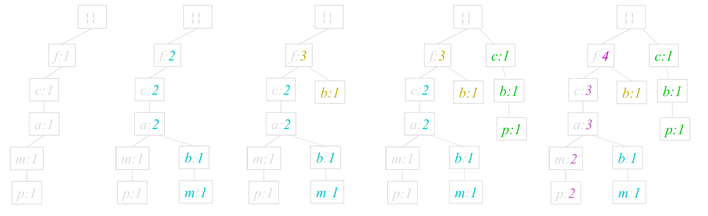

频繁项集的评估标准有
关联的数据在数据集中出现的次数占总数据集的比重
Support(X)=P(X)=Num(Samples)Num(X)
Support(X,Y)=P(XY)=Num(Samples)Num(XY)
一个数据出现后，另一个数据出现的概率，即数据的条件概率（X在Y发生的条件下发生的概率）。
Confidence(X⇐Y)=P(X ∣ Y)=Support(Y)Support(X,Y)=P(Y)P(XY)
X在Y发生的条件下发生的概率，与X总体发生的概率之比
Lift(X⇐Y)=P(X)Confidence(X⇐Y)=P(X)P(X ∣ Y)=P(X)P(Y)P(XY)
| 提升度 |
关联强弱 |
| Lift(X⇐Y)>1 |
X⇐Y为有效的强关联 |
| Lift(X⇐Y)<1 |
X⇐Y为无效的强关联 |
要选择一个数据集合中的频繁数据集，则需要自定义评估标准。最常用的评估标准是用自定义的支持度，或者是自定义支持度和置信度的一个组合。
Apriori算法是常用的用于挖掘出数据关联规则的算法，它用来找出数据值中频繁出现的数据集合。
Apriori算法的目标是找到最大的K项频繁集。
- 如果一个集合是频繁项集，则它的所有非空子集都是频繁项集。
- 如果一个集合不是频繁项集，则它的所有超集都不是频繁项集。
- Step1：找到符合支持度标准的频繁集
- Step2：找到最大个数的频繁集
规定最小支持计数为2

随着数据库容量的增大，Apriori算法重复访问数据库（外存）将导致性能低下。FP-tree算法对此进行了改进，减少了数据库的扫描次数和侯选集空间占用。
- Step1：第一次扫描，得到所有频繁一项集的的计数。然后删除支持度低于阈值的项，将频繁一项集放入项头表，并按照支持度降序排列。
- Step2：第二次扫描，将读到的原始数据剔除非频繁一项集，并按照支持度降序排列。
- Step3：读入排序后的数据集，按序插入FP树。
- Step4：从项头表的底部项依次向上挖掘。
最小支持度0.5

